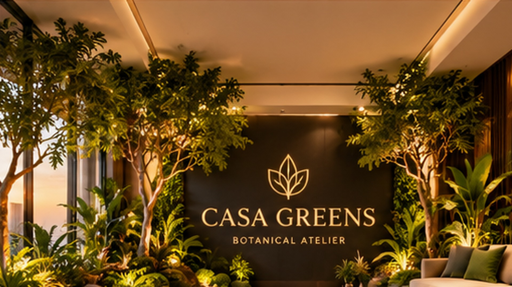
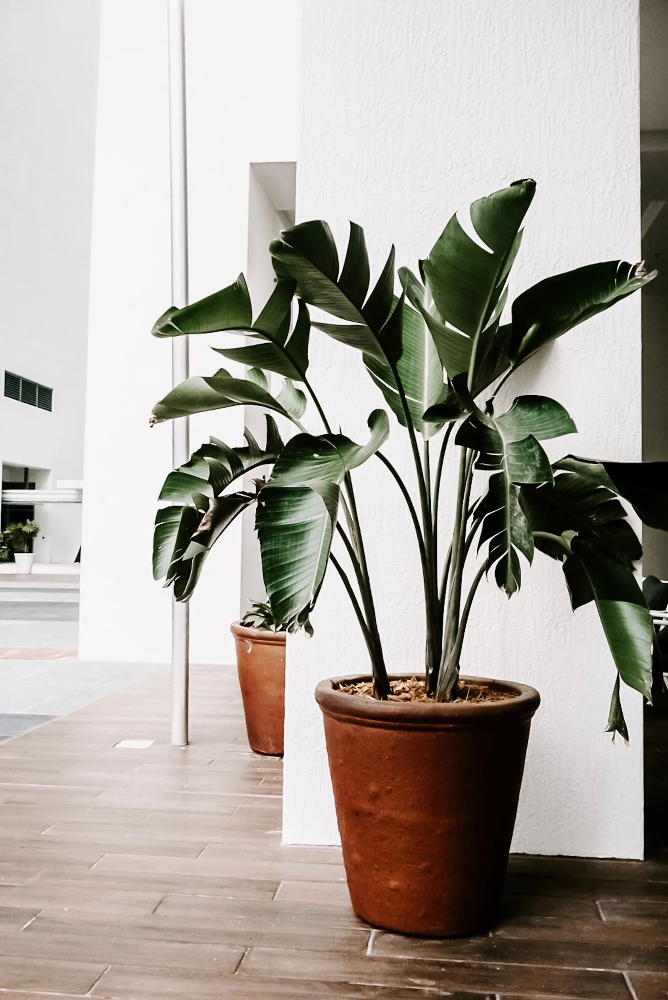
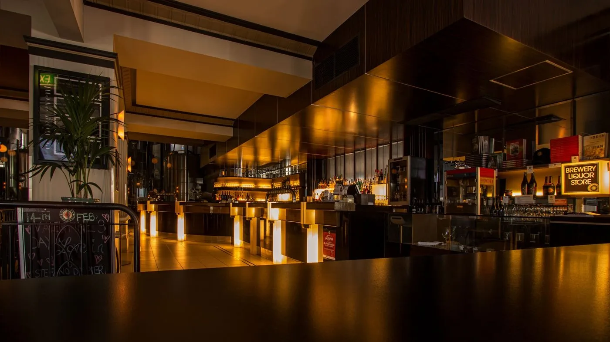
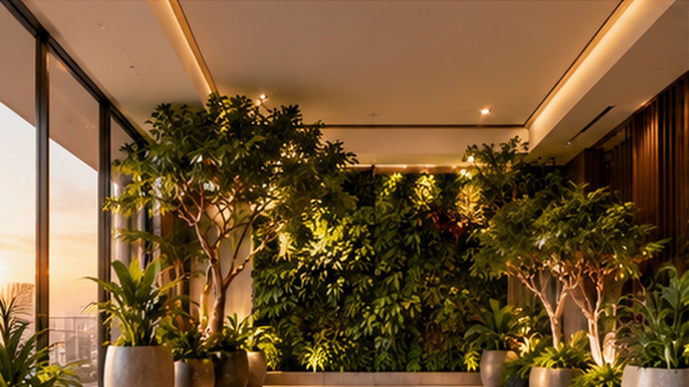
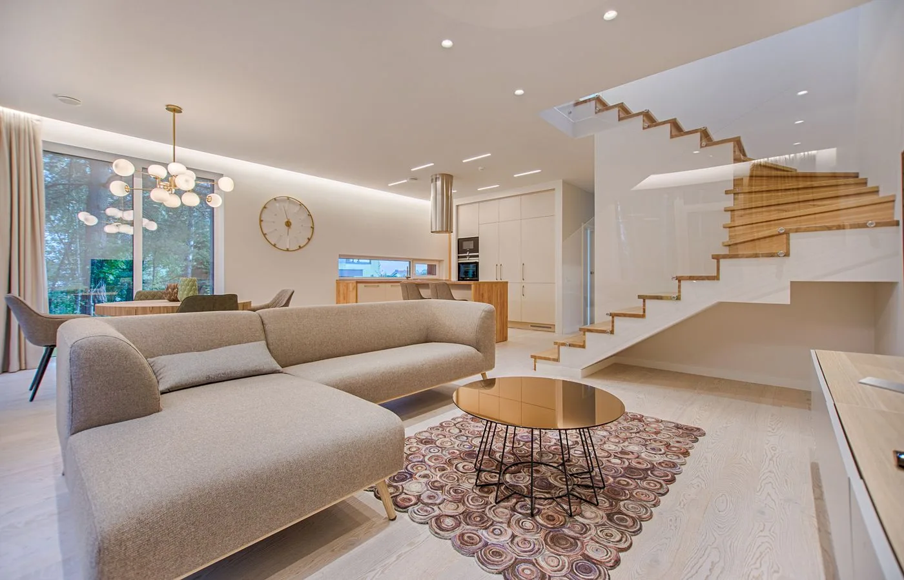
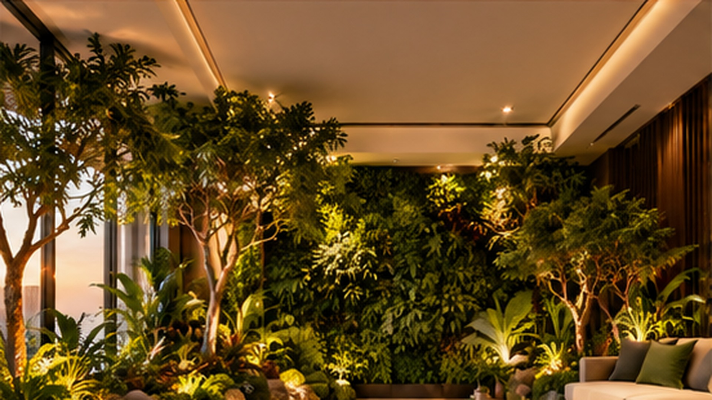

See the
possibilities.
Explore how plants, planters and installations can transform homes, offices, cafés, hotels and commercial interiors. The current gallery contains concepts and stock inspiration, not completed customer projects.
Design explorations and stock photography for inspiration. Stock images may show living plants; they illustrate a mood or setting, not our artificial products or completed installations.

DESIGN CONCEPTThe botanical retreat
Layered foliage, warm light and a welcoming place to unwind.

STOCK INSPIRATIONA calmer working corner
Sculptural foliage inspiration for desks, meeting rooms and quiet corners.

STOCK INSPIRATIONAn atmospheric welcome
Warm materials and intimate lighting: a setting to imagine with bespoke greenery.

DESIGN CONCEPTThe living backdrop
An architectural composition of green walls and statement trees.

STOCK INSPIRATIONRoom to breathe
An open, light-filled interior to inspire a considered greenery palette.

DESIGN CONCEPTA greener pause
A lounge garden concept to inspire softer shared spaces.
A botanical arrival
Imagine a hotel welcome shaped by artificial trees, coordinated planters and a layered green wall.
Showing all 7 inspirations